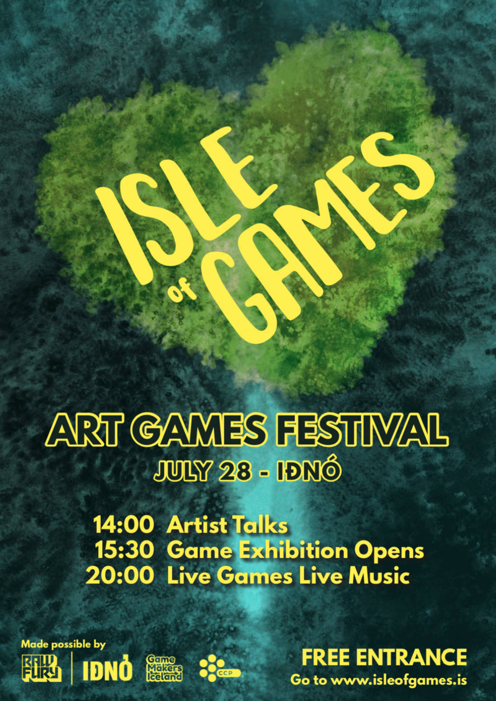

(published September 16, 2019)
We did it again! Sunday, July 28th, we held the second edition of Isle of Games. The festival had talks by 8 speakers, 10 new games, and 5 new performances. We had a full house during the talks, a well-attended exhibition and a spectacular night. This article will give you an overview of the proceedings, with links, credits and photos ✨.
Last year, we hoped to bring part of the global alternative game scene into Reykjavik, and showcase it alongside our own work. This year we decided to prioritize our own work, and further inspire local creators to participate and contribute to what we're trying to build.
The article from last year has proven to be a powerful artifact of documentation and inspiration, and we hope this year's will be the same or even better. Spread it far and wide, and let us know what you think. Follow us on Facebook and Instagram for future events. We will update this article when more footage rolls out.
We started the day with a series of short artist talks. The speakers include artists from all sorts of artistic disciplines, talking about how their work has touched games, or the other way around. Most of our speakers are based in Reykjavik, but we invited Moshe Linke as a guest to the festival. We recorded the talks, but at the time of writing they are still being edited. (The ones marked with a "🔴" have links to the recording.)
Ten games, ten custom installations, most of which created in Reykjavik (some even made in IÐNÓ). In the case of the installations, it is difficult to credit individuals for something that is largely a group effort, so it is omitted on purpose in some cases.
Returning to Isle of Games with a new set of stories, The Choosatron is an interactive fiction arcade machine that prints as you play. Play stories, make choices and take your story home with you. This year, we commissioned icelandic writers to make new stories, even some in Icelandic.
Gale is a two player 2D platformer which involves a character traversing a series of dark landscapes, with only the negative space left by the wind giving shape to the obstacles in your way. One player is the character, the other controls the wind direction, and both of you must work together to navigate your way through the world.
The controller consisted of two pillars, one with a joystick and a button to control the character, and the other with a rotating dial for the wind. The pillars were coated in black vinyl and the caps of the joystick and dial were Icelandic lava stone.
Gently Down The Marsh is the story of four companions in a canoe, each with their own oar, two to a side. Well, they can switch sides by double tapping their key but they must coordinate and work together to navigate through the twisting bends, the rushing rapids and the hazardous debris. This is a game three friends made together during an 8-hour mini-jam at IÐNÓ.
For isle of games, we built an abstract 4-person rowing boat, and provided life vests (borrowed from the Icelandic Search And Rescue team) for people to get into character. Each seat on the long bench had an oar, with an arcade button attached at the end. Moving the oar had no gameplay effect, yet people paddled away
Horizons is a series of interactive music journeys for Daydream, featuring music from Bonobo. You control the music; the music controls the world.
The VR space for Horizons was located inside of the LED-cube which was borrowed from Huldufugl's project Kassinn.
Take a walk in a virtual park. Make your way through the maze, have a swim at the beach, stroll through the flower garden or catch the football match.
The game was presented on a small patch of (fake) grass, with some crates to sit on. The controls were a simple 4 directional joystick inside another grassy crate. Jói set out to make his game hyper-accessible, and we wanted the installation to support this. Einar drew a wonderful map, which we printed out to guide people around.
A virtual art gallery and features a handful of contemporary works inside a neo brutalist structure. It explores the idea of the space itself being the main experience. How visitors exploring the architecture without any direction or guidance. How natural light and shadows can be used to transform a rough space into a mystical place. How sound behaves in the ever-changing conditions of the architecture. A concept for a future.
Debuting at Isle of Games, Neo-Brutalism Of Tomorrow was a game that demanded some privacy, and darkness, which is difficult to provide during summer in Iceland. We built a small room out of stage-cloths, on the side of the stage.
SHIFT was made with the intention of creating a meditative environment. A reflection is something bending or bouncing - shifting back to you: light, sound or even your own thoughts. Take a moment to explore.
SHIFT was shown on the Outlaw, a dedicated Walking Simulator arcade we built for Isle of Games 2018. It has one big button to walk, and a trackball to look around.
Svartkolla is a short game about the troubles of the lost sheep Svartkolla and her farmer friend. This game was made in 48 hours at the Isolation Game jam in Kollafoss, Iceland.
Svartkolla was adapted into a touch-screen game, from its original browser web-version. Running on a 12" iPad pro, it was framed by Innrammarinn, a local frame shop, and exhibited on an easle.
Undir væng uses HTC Vive Controllers designed for virtual reality in a unique context. Each controller is mapped to a wing of the bird, giving the player a high level of control and expressive power.
A beautiful set of wings, and a decorated mounting station were knitted by Auður Ákadóttir for this game. It was exhibited on the main stage during the day.
Walk around the pond on a phone call with an old friend. Vættir is an audio experience/radio play/walking simulator based on the world of Vættir by Alexander Dan Vilhjálmsson.
Returning from Isle of Games 2018, we converted a typical icelandic simabekkur, or Phone bench, to deliver the phone number as a secret message for you to write down. A special thanks again to Hringdu, for making the phone number available again.
Isle of Games continues to try to find new ways for audiences to experience games. Five new collaborations took place between stage performers and video games. The response was overwhelmingly positive, and we encourage people to adopt and adapt this formula for their own events.
A vicarious walk through one of Connor Sherlock's Walking Simulator a Month Club entries: As the Fog Burns, accompanied by live reading. The performer read a passage from the book The Brief Wondrous Life of Oscar Wao by Junot Díaz.
Local jazz musicians Tumi and Höskuldur played and improvized live on the saxophone and drums to the rhythm of Ape Out's incredible opening level, or Disc 1.
In Ivan Notaroš' unreleased Thought of Train, the two stand-up comedians Jono and Hugleikur allowed the audience to be a fly on the wall of a train, travelling between venues on one of the duo's comedy tours around Europe.
An eclectic underwater soundscape by musician and composer Iris Thorarins will accompany the game Abzu, live on stage.
Composer Iris Thorarins re-scores the first areas of the game ABZÛ for us, while also improvising foley and layering live instruments. Debuting at last year's Isle of Games, this performance has been iterated upon and taken place multiple times throughout 2018 and 2019.
Kjartan Holm will guide us through the inspirational fugue-state that is Fugue in Void, created by Isle of Games invited artist Moshe Linke.
📷 Isle of Games Photos by Patrik Ontkovic
📗 the 2019 booklet by Marín Björt Valtýsdóttir
📹 Promo videos 👇 by Owen Hindley
The official poster by Marín Björt Valtýsdóttir

And that's that! Thanks for reading (or skimming) and please do let us know if any of the links or credits seem wrong or missing. We had a blast, and hope to return next year with a similarly impressive line-up.
Isle of Games would not have been possible without the help of many people. A special thanks goes out to the venue IÐNÓ and all the volunteers, artists and performers who helped us build Isle of Games 002. We also wouldn’t be here without the generous help of our sponsors Raw Fury and CCP. We'd also like to thank the volunteers who helped us set up, break down, move chairs and stay hydrated!
Isle of Games is organized by Alexandra, Auður, Haukur, Joon, Jóa, Jói, Kristín, Marín, Nanna, Owen, Sig and Torfi. If you would like to volunteer, co-organize or collaborate on new projects with us, get in touch at hello@isleofgames.is.
The pictures are taken by Patrik Ontkovic, the aftermovie was recorded and edited by Bob Schellens, and together they are also responsible for recording and editing the talks.
NB: This picture was taken after clean-up, and not everybody who should be in it, is in it, but it's the best group shot we have…
…we're turning into quite the family…
{kind=link}